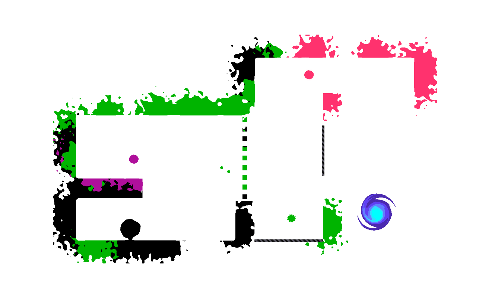
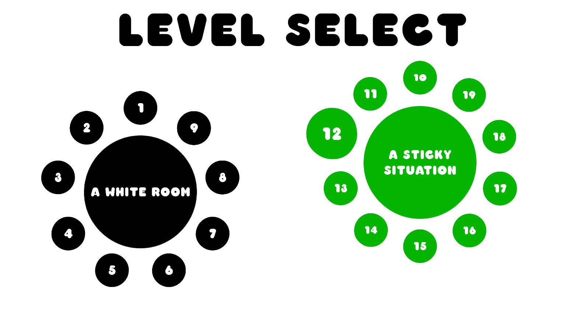

<!DOCTYPE html>
<html>
    <head>
        <title> ink </title>
        <meta name="viewport" content="width=device-width, initial-scale=1.0">
        <link rel="icon" type="image/x-icon" href="../assets/squishy.png">
        <link rel="stylesheet" href="../css/main.css">
        <link rel="stylesheet" href="../css/header.css">
        <link rel="stylesheet" href="../css/portfolio.css">
        <link rel="preconnect" href="https://fonts.googleapis.com">
        <link rel="preconnect" href="https://fonts.gstatic.com" crossorigin>
        <my-fonts></my-fonts>
</html>
<script type=module src ="../js/templateLoader.js"></script>
<body>
    <my-header></my-header>
    
    <div class="blank-space"></div>
    <div class = "page-title">
        <h3> ink.</h3>
        <p> Color the World with Each Attempt</p>
    </div>

    <div class="photo-section">
        <div class="photo-display">
            <div class="column side">
                
            </div>
            <div class="column middle">
                
            </div>
            <div class="column side">
                
            </div>
        </div>
        <div class ="photo-row">
            <div class="photo-standby">
                
            </div>
            <div class ="photo-standby">
                
            </div>
            <div class ="photo-standby">
                
            </div>
            <div class ="photo-standby">
                
            </div>
        </div>
    </div>

    <div class ="blank-space"></div>
    
    <div class ="page-body">
        <div class ="overview">
            <div class = "section-header">
                <p> Overview</p>
            </div>
            <p style="font-weight: bold;">
                ink. is a game where failure is welcomed. You play as an inky black blob and with each attempt, you leave your color behind.
                <br><br>
                This project is still being worked on... 
                <br>
                Stay tuned for more updates!
            </p>
            <div class="line-break"></div>
            <p>
                <strong>Role:</strong> Tech Artist
                <br>
                <strong>Duration:</strong> June 2025 - ???
                <br>
                <strong>Medium:</strong> Video Game
                <br>
                <strong>Team Size:</strong> Jesse Herrnson and I
                <br>
            </p>
        </div>

        <div class="blank-space"></div>
        <div class="design">
            <div class="design-section">
                <div class="section-title">
                    <h3> Responsibilities</h3>
                </div>
                <div class ="line-break">
                    
                </div>

                <h4>Tech Artist / Coder</h4>
                <p>
                    I was brought into this project to provide a new creative direction with shaders and code that can make the game much more cohesive
                    <ul>
                        <li>
                            <p>
                                Lead in building on and developing the game's graphics and art style
                            </p>
                        </li>
                        <li>
                            <p>
                                Designed and Coded an animation system to ensure the player character feels more "fluid"
                            </p>
                        </li>
                        <li>
                            <p>
                                Developed custom shaders that give the game a more cohesive look such as procedural splats
                            </p>
                        </li>
                    </ul>
                </p>
            </div>
            <div class="blank-space"></div>
            <div class="design-section">
                <div class="section-title">
                    <h3> Acknowledgements</h3>
                </div>
                <div class ="line-break">
                    
                </div>
                <p>
                    I want to extend gratitude towards Jesse Herrnson who brought onto this project. It's been a pleasure working on this with him and we are hoping for a release soon!
                </p>
            </div>
            
        </div>


    </div>

    <div id="lightbox-overlay" class="lightbox-overlay">
        <button class="lightbox-close" id="lightbox-close">&times;</button>
        <div class="lightbox-container">
            
        </div>
    </div>
    <script src ="../js/portfolioViewer.js">
</script>
</body>